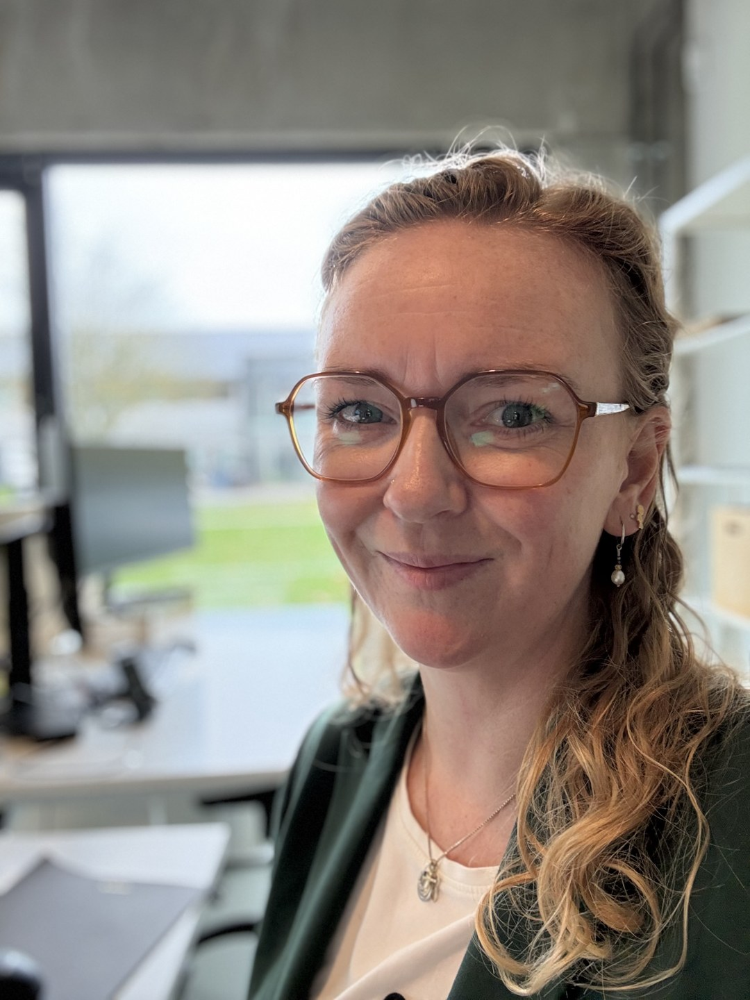

Se nye karriereveje
Få indsigt i arbejdsmarkedets udvikling og i, hvordan faglig substitution kan åbne muligheder i andre brancher.
Karriereforløb for højtuddannede
Et 6-ugers karriereforløb for dig, der vil bruge dine erfaringer og kompetencer i en ny branche eller et nyt arbejdsområde.
Fra traditionel jobsøger til aktiv jobmager.

Tilgangen
Et karriereskift starter med at få øje på nye muligheder. Mange af dem bliver synlige, når du undersøger, hvilke opgaver virksomheder har brug for at få løst.
Ny teknologi, digitalisering, bæredygtighed, demografiske forandringer og organisatorisk udvikling ændrer brancher og opgaver. Det åbner for, at både specialist- og generalistkompetencer kan skabe værdi i nye sammenhænge.
Faglig substitution handler om at udfordre forestillingen om, hvilken uddannelse eller erfaring en opgave kræver. Dine kompetencer kan være relevante, selv om din baggrund ser anderledes ud.
Med en virksomhedsrettet tilgang tager du kontakt og går i dialog om konkrete behov. Det kan åbne for jobmuligheder, der endnu ikke er slået op.
Deltagerne arbejder med egne karriereidéer og afprøver værktøjerne i praksis mellem kursusdagene.
Få indsigt i arbejdsmarkedets udvikling og i, hvordan faglig substitution kan åbne muligheder i andre brancher.
Kortlæg dine faglige specialer og brede kompetencer, og sæt ord på, hvilke nye opgaver du kan løse.
Brug CVR, Proff, LinkedIn samt erhvervs- og vidensklynger til at finde virksomheder og forstå deres behov.
Træn samtale- og spørgeteknik, præsentér dine kompetencer, og tag kontakt til relevante virksomheder undervejs.
Få sparring fra andre sporskiftere i arbejdsgruppen og fra Tine om det, du afprøver undervejs.
Saml erfaringerne fra virksomhedsdialogerne i en individuel handlingsplan for dit videre karriereskift.
Program og praktisk format
Undervisning, workshops og sparring giver deltagerne en ramme for at undersøge nye brancher, afprøve virksomhedskontakt og planlægge næste skridt.
Uge 1 · to fysiske kursusdage
Undersøg arbejdsmarkedets udvikling, faglig substitution og forskellen på specialist- og generalistkompetencer. Arbejd med cases om sporskiftere og øvelser med afsæt i dine egne erfaringer.
Brug CVR, Proff, LinkedIn og klynger til at finde virksomheder. Træn samtale- og spørgeteknik, lav en personlig strategi for virksomhedskontakt, og begynd arbejdet i din arbejdsgruppe.
Uge 2 · arbejdsgruppemøde 1
Giv hinanden sparring på kompetencer, undersøg mulige brancher og find relevante virksomheder. Brug gruppen til at kvalificere din personlige virksomhedsstrategi.
Uge 3 · arbejdsgruppemøde 2 og online sparring 1
Udvælg kontaktpersoner, træn dine formuleringer, og følg op på de første henvendelser. Hver gruppe mødes online med Tine til status og sparring om udfordringer og næste skridt.
Uge 4 · arbejdsgruppemøde 3
Fortsæt kontakten, udbyg dit netværk, og del erfaringer fra dialogerne. Find konkrete opgaver, du kan bidrage til hos de virksomheder, du har valgt.
Uge 5 · arbejdsgruppemøde 4 og online sparring 2
Følg op på virksomhedsdialoger og mulige jobåbninger, og forbered den afsluttende workshop. Gruppen mødes igen online med Tine og aftaler næste skridt frem mod kursusdagen.
Uge 6 · fysisk kursusdag
Del erfaringer, træn svar på spørgsmål om manglende brancheerfaring, og konkretisér dit forslag til en stilling eller en række opgaver. Du afslutter med en individuel handlingsplan og fælles evaluering.
Øvrige ydelser
Jeg hjælper mennesker med at lykkes i uddannelse, arbejdsliv og organisationer. Jeg udvikler og gennemfører forløb for blandt andre a-kasser, fagforeninger, jobcentre, uddannelsesinstitutioner og virksomheder.
Undervisning i kompetenceafklaring og karriereaktiviteter, hvor jobsøgende og virksomheder mødes. Jeg har særligt fokus på højtuddannede og på veje ind på arbejdsmarkedet for neurodivergente højtuddannede.
Trivselsforløb for unge med fokus på fællesskab og samarbejde. Jeg tilbyder også undervisningsobservation og supervisionssamtaler om læreres og underviseres hverdag og udvikling i rollen.
Workshops med afsæt i FN’s verdensmål. Medarbejderne drøfter konkrete valg og muligheder for at gøre bæredygtighed til en del af det daglige arbejde.
Jeg samler mennesker om en fælles opgave, faciliterer dialogen og hjælper jer med at omsætte idéer til næste skridt. Jeg bidrager også med projektledelse, kompetenceudvikling, e-læring og organisatorisk udvikling.
Om Tine
Jeg er uddannet folkeskolelærer og cand.pæd. i uddannelsesvidenskab med fokus på læring, undervisning, kompetence- og organisationsudvikling. Jeg har selv skiftet karriereretning og ved, hvad det kræver at få øje på, hvor ens erfaring kan bruges i en ny sammenhæng.
Som selvstændig konsulent arbejder jeg blandt andet for Akademikerne og Akademikerkampagnen. Sporskifterforløbet bygger på mit samarbejde med højtuddannede, virksomheder, erhvervsorganisationer og jobcentre.
“Jeg kan godt lide at samle mennesker omkring en opgave og få ting til at ske og folk til at lykkes.”
Jeg er entreprenant og trives med både at analysere, udvikle og selv stå for undervisningen eller facilitere samtalen. Jeg arbejder med overblik, struktur og tydelig kommunikation og bringer nysgerrighed, vedholdenhed, humor og god energi ind i samarbejdet. For mig hænger trivsel, læring og resultater tæt sammen. Vi udvikler os bedst, når vi trives og oplever, at vi kan bidrage.
Kontakt
Har du brug for hjælp til at udvikle et forløb, afholde en workshop eller facilitere en proces, så tager jeg gerne en snak om mulighederne. Du er også velkommen til at skrive, hvis du selv overvejer et sporskifte og har spørgsmål om forløbet.
29 27 46 27 tv@tinevinter.dk Tine Vinter på LinkedIn